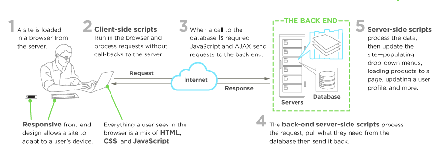

Front End Developer
What is a Front-End Developer?
Front-end web development, also known as client-side development is the practice of producing HTML, CSS and JavaScript for a website or Web Application so that a user can see and interact with them directly.
Where is the Client-Side?
Goals of this class
Proficiency in HTML, CSS, JavaScript
Portfolio
Industry Experience
Then a Job!
The Big Three

Core Web Technologies
- Uniform Resource Locators (aka URLs)
- Hypertext Transfer Protocol (aka HTTP)
- Hyper Text Markup Language (aka HTML)
- Cascading Style Sheets (aka CSS)
- JavaScript Programming Language (aka ECMAScript)
- JavaScript Object Notation (aka JSON)
- Document Object Model (aka DOM)
- Web APIs (aka HTML5 and friends or Browser APIs)
- Web Content Accessibility Guidelines (aka WCAG) & Accessible Rich Internet Applications (aka ARIA)
In Demand Skill
What employers look for
Competencies
Front End Jobs / Paths
- Front End Developer
- Full Stack Developer
- Front End Dev Ops
- Front End Testing / QA
- Front End Mobile Developer
Front End Job Boards
- angularjobs.com
- authenticjobs.com
- careers.stackoverflow.com
- css-tricks.com/jobs
- codepen.io/jobs/
- frontenddeveloperjob.com
- glassdoor.com
- jobs.emberjs.com
- jobs.github.com
- weworkremotely.com
- fronthat.com